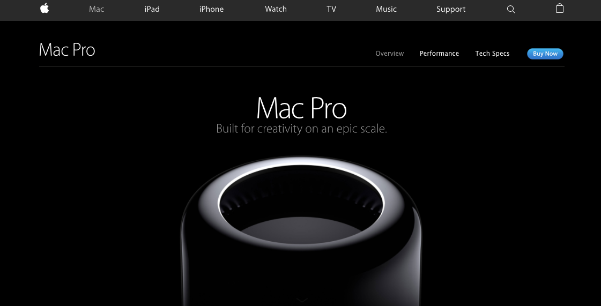

Kevin Brown, and his awesome stuff
HOME The webpage advertising the new macpro has the same interactive qualities of the typeface assignment. obviosly Mac took the concept a atep further with actual java script but it was nice to see the same concept being executed in a different way.
Mac Pro